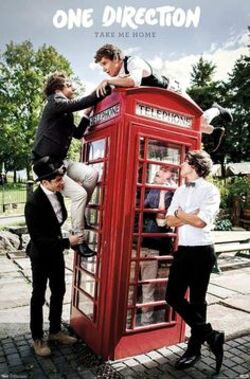
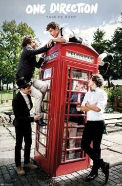
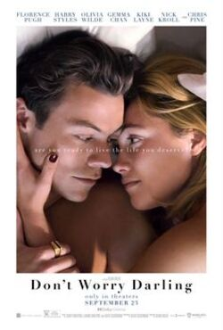
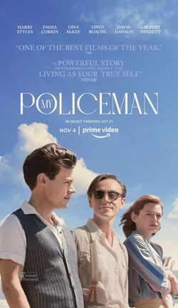

Harry Edward Styles nació el 1 de febrero de 1994 en Holmes Chapel, Cheshire, Reino Unido. Su vida cambió para siempre en 2010 cuando audicionó para «The X Factor». Aunque no ganó, fue seleccionado para formar parte de la boy band One Direction, que rápidamente se convirtió en un fenómeno global. Con cinco álbumes de estudio entre 2011 y 2015, la banda arrasó en las listas de éxitos y acumuló millones de seguidores en todo el mundo.
 

En 2016, One Direction anunció un descanso indefinido, y Harry se lanzó como solista. Su primer álbum, «Harry Styles» (2017), fue un éxito rotundo, debutando en el número uno en varios países. Con su segundo álbum, «Fine Line» (2019), Styles demostró que su talento iba más allá de la boy band, con éxitos como «Adore You» y «Watermelon Sugar». En 2022, lanzó su tercer álbum, «Harry’s House», consolidándose como uno de los artistas más versátiles de su generación.
El estilo musical de este cantante va desde pop y rock hasta folk y soul, su música abarca una variedad de géneros, mostrando su versatilidad como artista.


Asimismo, Styles se encuentra desarrollando su carrera actoral. Ha incursionado en el cine con destacadas actuaciones. En 2022, protagonizó la película "Don't Worry Darling", un thriller psicológico dirigido por Olivia Wilde, donde interpretó a Jack, un hombre que esconde oscuros secretos en un mundo aparentemente utópico. Ese mismo año, también tuvo un papel en el drama romántico "My Policeman", donde dio vida a Tom Burgess, un oficial de policía atrapado en un triángulo amoroso en la Inglaterra de la década de 1950. Ambas actuaciones consolidaron a Styles como una estrella versátil en la industria del cine.
 